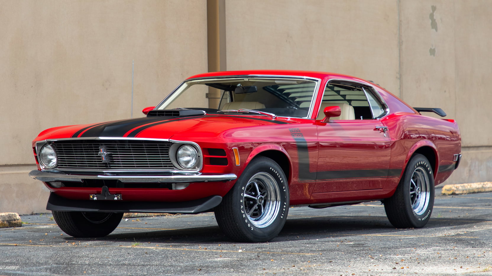
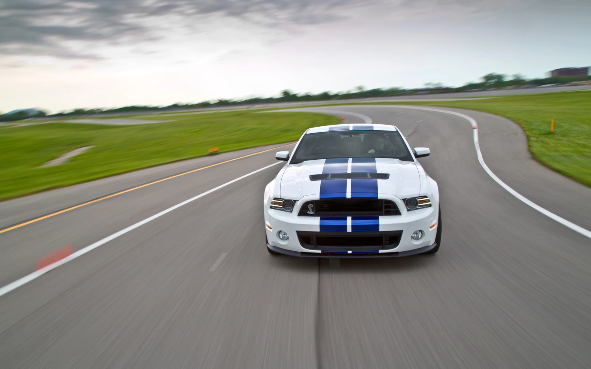
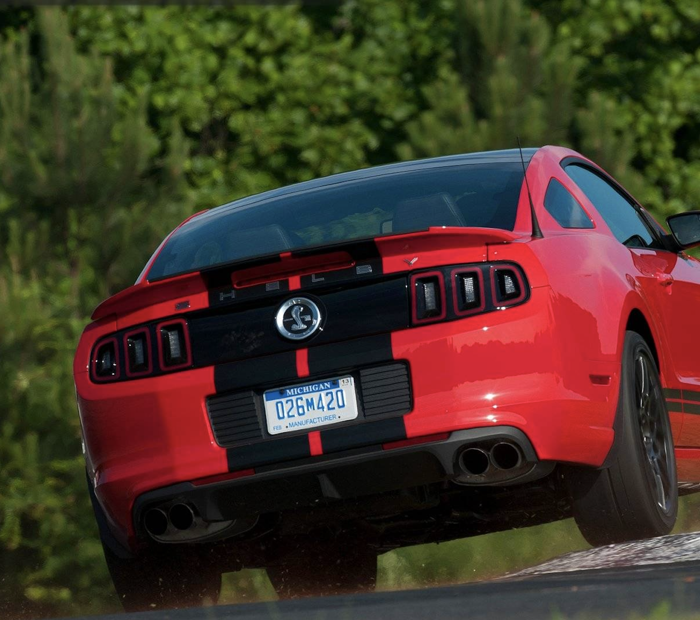

The 1970 Ford Mustang Boss 302, is one of the most beautiful muscle cars ever made-in my opinion. If you ladies and gents ever came to my house, you'd be surprised by my collection of model cars of this one. So many colors, because they all look good.
Of the hardtop version of this beauty, there was a total of 82,569 made. The fastback model had about 38,422 made. Of the fastback 302, there were 7,013 made.
However, of the fastback 429; there were only 499 made. One more would have made it even-like cmon Ford! One thing I didn't know until today was there was a convertible model. There was only 7,673 made.

The most recent muscle car that I absoutely Love
The 2013 Shelby GT500 is the most recent beautiful mustang, that I love. This beauty had a 5.8 V8 SVT engine. There was a total of 4,885 of these produced.
The price for these at MSRP started at $54,995. Don't worry the brakes in this beauty are great. Ford equipped this beauty with, "All-speed traction controls" that are combined with quad-sensor ABS for a 60-0 mph braking distance of approximately '101.'
Yes! before you ask, it did have convertible versions.


Mustang_2
If you wish to reach me or have questions, please don't hesitate to reach out.
You can contact us at kmthornton@hotmail.com. If you need to contact us through another option, we have discord, instagram and twitter.
Our Discord is TheLostTitan#5336. Our instgram is kmthornton23. Our twitter is MaraVenj. Again, if you have any more questions or feedback, let us know via these contact options.